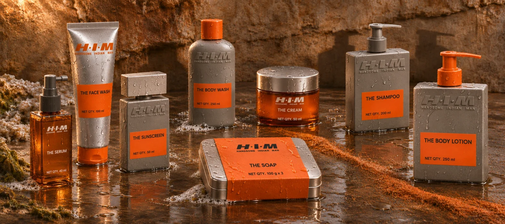
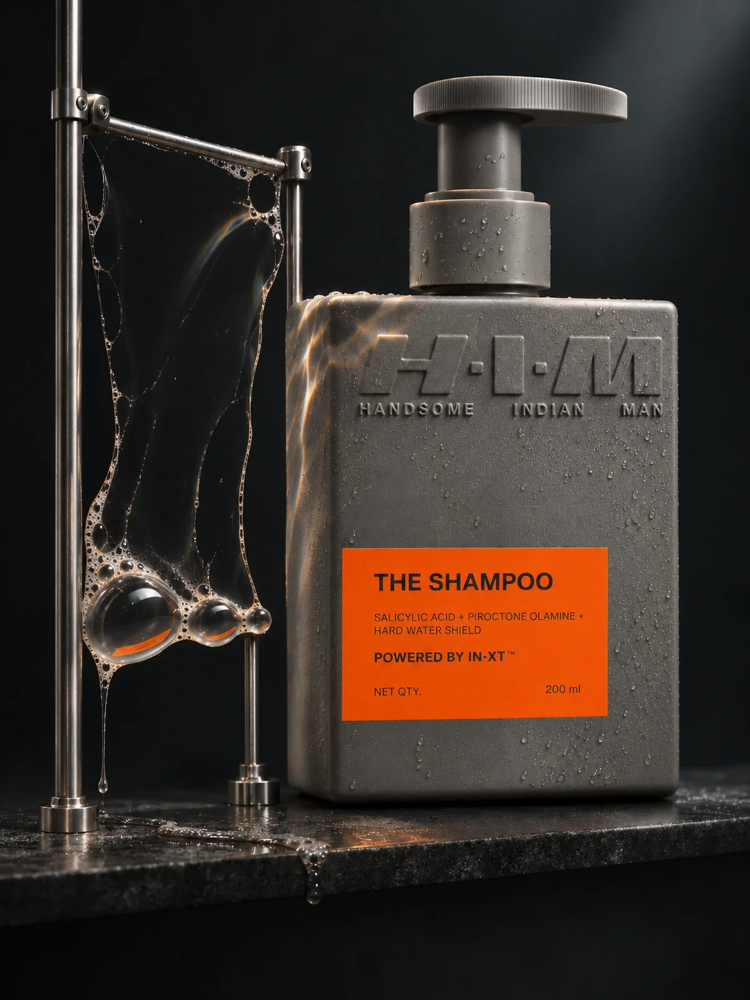
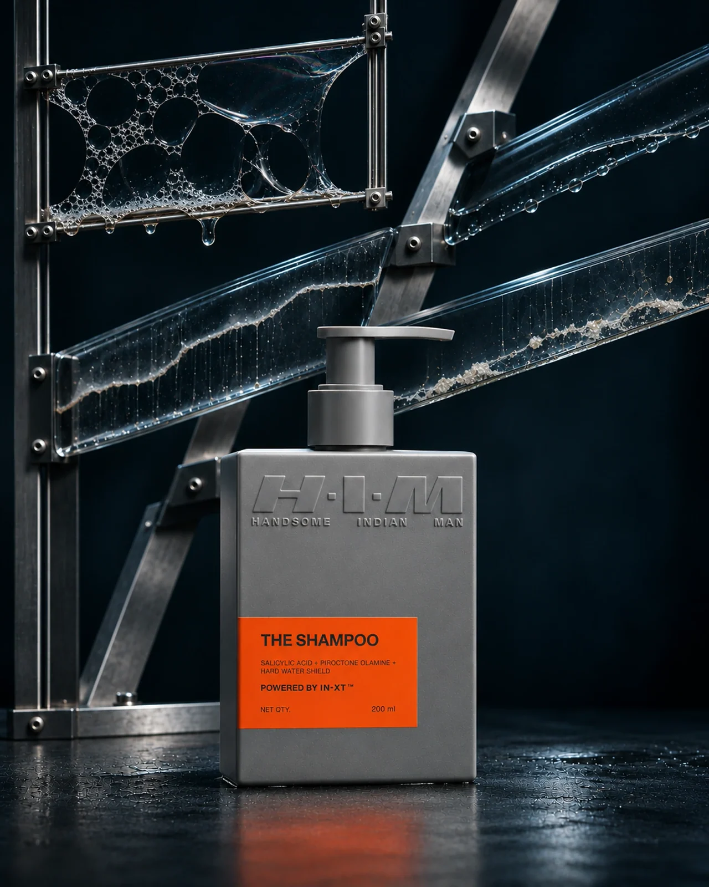

H.I.M / THE WEATHER HAS A BODY
Eight products meet water, mineral sediment and light. Two shampoo studies isolate the last moments of a soap film.

The idea
The collection holds its ground on a weathered, wet mineral surface. The companion images move closer to one shampoo bottle, where a draining film and a constructed glass channel turn a temporary material into the subject.
Making the world
These three AI-assisted digital images are self-initiated concepts, not photographs of a physical set or official H.I.M advertising. The eight-product image is an 8192-pixel-wide interpolation from a smaller source, not a native 8K capture. The two shampoo images are shown from 1086 × 1448 and 1122 × 1402 pixel sources; their larger web files are interpolated. Packaging microtype and physical set behavior need verification before commercial use.
The series

